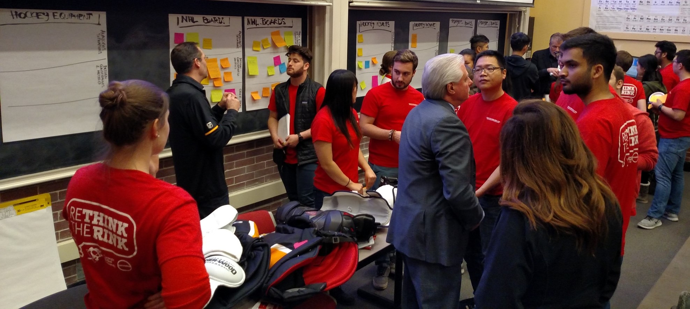
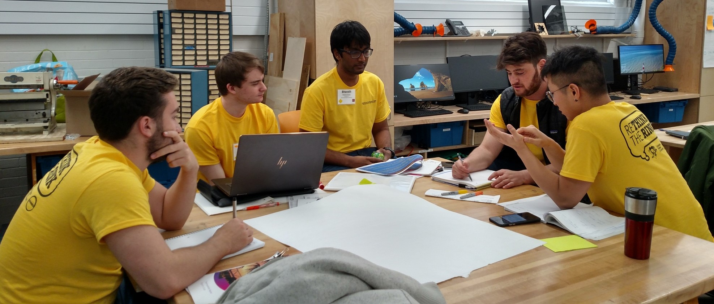
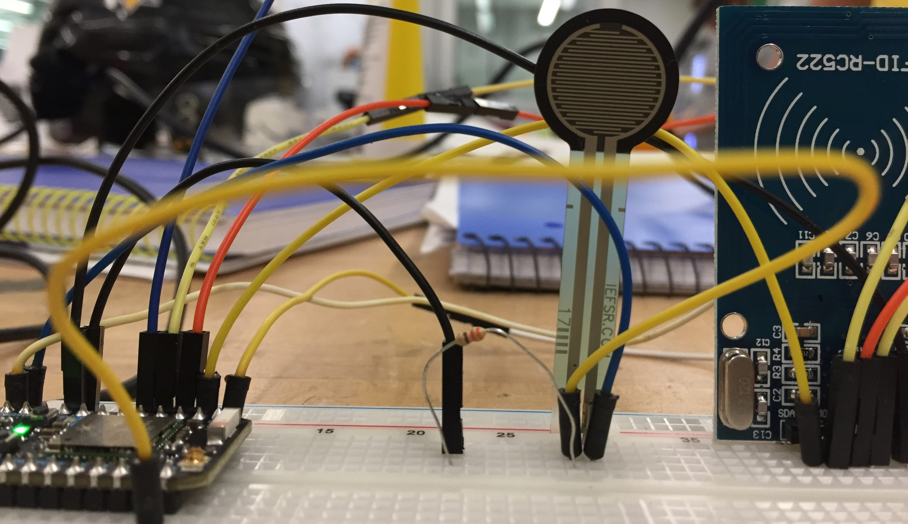
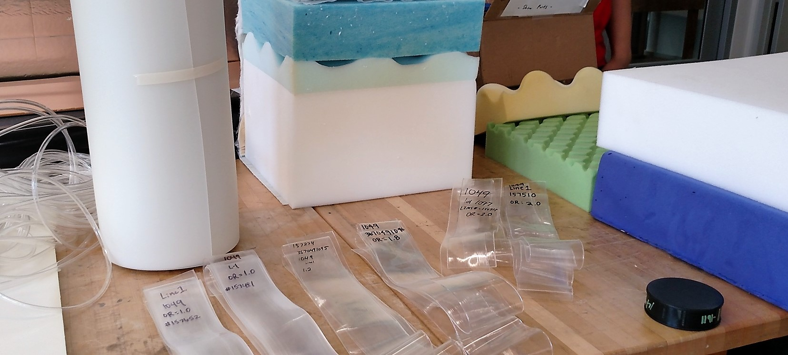
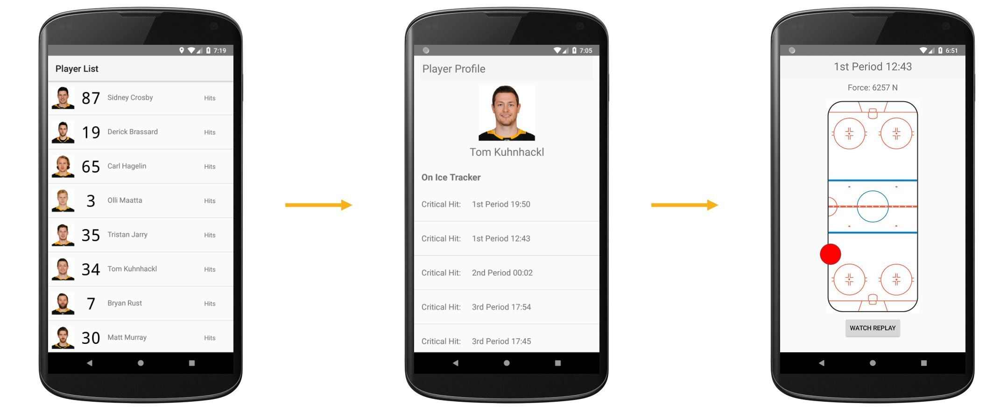
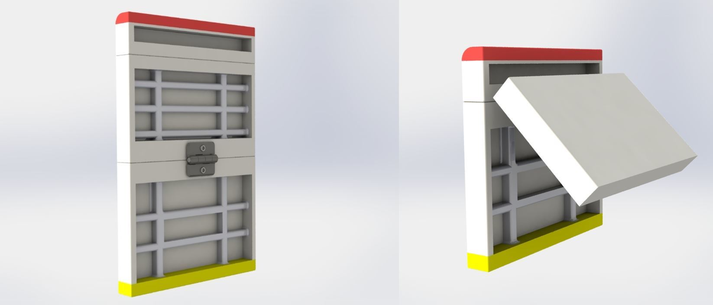
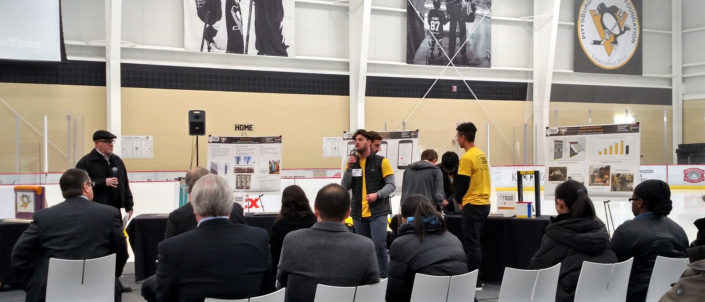

Ice hockey is one of the only sports with a hard, physical boundary around the playing space. While there has been a push to make equiptment for players safer, there has not been much innovation in the design of the boundary itself, mainly to preserve the integrity of how the puck bounces off the boards. Using novel materials from Covestro, and the hockey expertise of the Pittsburgh Penguins, we were charged to rethink the design of the rink. We were given one week for the competition!

The weeklong challenge began with amazing presentations from equiptment and gameplay experts in the Penguins organization and materials experts from Covestro. As a group, we synthesized the important information and began coming up with candidate concepts. As we began exploring ideas more deeply, we formed teams of four to five students, focusing on diversifying skillsets and academic programs.

In our research, we noticed the severity of a hit is often unrecognized by the coaches, and that players tend to not express injuries when they occur. This ambiguity makes re-injury extremely common at both the NHL and youth levels. To combat this, we prototyped an embedded system which could live in the glass board surrounding the rink, and communicate in real time with a companion app held by the coaches or trainers at the bench. By registering impacts which may have been significant enough to cause injury, we could share that information and help coaches and players prevent re-injury.


The electronics included a force sensor to register impact, and an RFID reader which would identify which specific player(s) was involved in the collision. The system would be embedded in a thin thermoplastic polyurethane (TPU) film between two layers of clear polycarbonate. The polycarbonate has almost identical surface qualities to the traditional acryllic board, and the TPU layer acts as a glue for the two outer layers, while providing protection for the sensors.

Within the app, users can select which players they would like to track, recieve real time updates about the collisions they have been involved in, and elect to view more information about the collision! I led the design of the app's interface and functionality along with another team member.
In analyzing the Penguins practice facility, we recognized a problem with the rink; it only has one height setting. For the NHL players, the board are properly sized, with the dasher board falling around hip height. However, for younger players, the dasher board is an extreme hazard because of it's proximity to the head. To address this, we developed a conceptual prototype for a system which would allow the board height to be raised and lowered easily.

The boards have two height settings: the reduced construction for players under ten, and the full construction for players ten and over. These ages come from the fact that before the age of ten, players are learning fundamentals of the game which don't rely as much on utilizing the boards strategically, thus the reduced heigh is not an issue. The reduced construction's height is based on available data for the average height of children in the four to ten range. The system could be rigged up with the existing infrastructure of a hockey rink, such that the glass could be raised and the boards could snap and lock in.

We were given the opportunity to demo and pitch our concepts to executives from Penguins organization and from Covestro, all while on the ice rink! Our team won "Most Innovative" for our work in the competition.
More information on the competition can be found here!